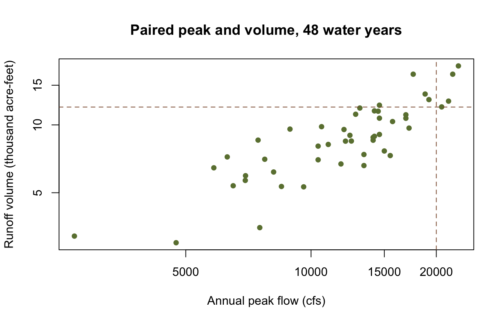
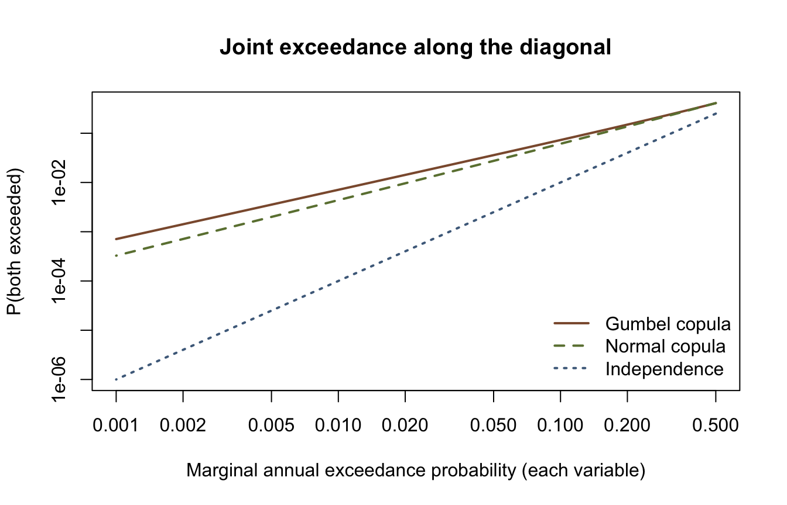
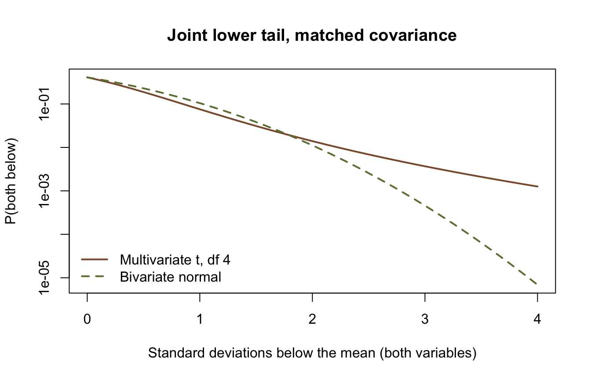

library(corehydror)26. Copulas and joint frequency
A reservoir cares about two things at once. The peak inflow sizes the spillway; the runoff volume sizes the storage. Fitting each record separately says how often each is exceeded and says nothing about how often they arrive together. A copula answers that second question: it holds the two marginal distributions fixed and models only the dependence between them.
corehydror exposes the seven bivariate copulas of the Numerics library through copula() and copula_fit(), and the multivariate distributions through mvdist_normal() and its siblings. This example fits a copula to a paired peak-and-volume record, prices a coincident design event, and checks the answer against the model-based bivariate_analysis() path.
What you’ll learn
- Fit a copula’s dependence parameter three ways: maximum pseudo-likelihood, Kendall’s tau inversion, and inference from margins.
- Read tail dependence, and watch two copulas that fit the body of a sample almost equally well disagree about its joint tail.
- Compute the and-joint exceedance probability of a coincident peak-and-volume event, and set it against the answer independence would give.
- Recover the same probability from a bivariate normal, and cross-check the whole thing against
bivariate_analysis().
Setup
Peak and volume pairs
Forty-eight water years. The peaks are the annual peak-flow record used in example 21 and example 23; the volumes are a companion record written for this example, so the page is self-contained and both languages read exactly the same numbers.
peak <- c(
6290, 2700, 13100, 16900, 14600, 9600, 7740, 8490, 8130, 12000,
17200, 15000, 12400, 6960, 6500, 5840, 10400, 18800, 21400, 22600,
14200, 11000, 12800, 15700, 4740, 6950, 11800, 12100, 20600, 14600,
14600, 8900, 10600, 14200, 14100, 14100, 12500, 7530, 13400, 17600,
13400, 19200, 16900, 15500, 14500, 21900, 10400, 7460
)
volume <- c(
7.21, 3.21, 11.88, 10.70, 9.07, 5.31, 7.04, 5.33, 6.18, 9.54,
9.68, 7.66, 8.99, 5.95, 5.37, 6.45, 7.00, 13.71, 12.75, 18.27,
11.54, 8.19, 11.15, 10.35, 3.00, 5.67, 6.71, 8.47, 12.02, 12.23,
10.71, 9.58, 9.82, 8.90, 8.80, 8.55, 8.48, 3.50, 6.60, 16.79,
7.39, 12.95, 11.09, 7.31, 11.50, 16.79, 8.05, 8.56
)
cat(sprintf(
"%d water years; peak %s to %s cfs, volume %.2f to %.2f thousand acre-feet\n",
length(peak), format(min(peak), big.mark = ","), format(max(peak), big.mark = ","),
min(volume), max(volume)
))48 water years; peak 2,700 to 22,600 cfs, volume 3.00 to 18.27 thousand acre-feetThe design event this page prices is a 20,000 cfs peak arriving with a 12 thousand acre-foot volume.
q_peak <- 20000
q_vol <- 12
plot(peak, volume,
log = "xy", pch = 16, col = "#6b7f3f",
xlab = "Annual peak flow (cfs)", ylab = "Runoff volume (thousand acre-feet)",
main = "Paired peak and volume, 48 water years"
)
abline(v = q_peak, h = q_vol, lty = 2, col = "#8c5a3b")
Dependence without marginals
copula_fit(family, x, y, method = "mpl") maximizes the pseudo-likelihood. That likelihood is defined on the plotting positions rank / (n + 1) rather than on the data scale, so it never touches the marginal distributions. Pass the raw paired observations: the ranking happens inside the shared C++ core, which is why R and Python fit the same number from the same input.
families <- c("Clayton", "Frank", "Gumbel", "Joe", "Normal")
mpl <- lapply(families, \(f) copula_fit(f, peak, volume, method = "mpl"))
names(mpl) <- families
ranking <- data.frame(
n_parameters = sapply(mpl, \(cop) length(copula_params(cop))),
theta = sapply(mpl, \(cop) cop$theta),
pseudo_loglik = sapply(mpl, \(cop) copula_log_likelihood(cop, peak, volume, method = "pseudo"))
)
round(ranking[order(-ranking$pseudo_loglik), ], 4) n_parameters theta pseudo_loglik
Normal 1 0.8652 30.3702
Gumbel 1 2.8147 30.0438
Joe 1 3.5522 26.7852
Frank 1 8.6716 25.7708
Clayton 1 2.3063 22.7077All five carry one dependence parameter and all five are evaluated on the same pseudo observations, so their pseudo log-likelihoods rank them directly. The ranking barely separates the top two: the Normal copula leads, the Gumbel follows, and both stand well clear of the other three. Both are carried forward below, because they turn out to disagree about exactly the part of the sample the design question asks about.
method = "tau" inverts Kendall’s tau into the dependence parameter with no likelihood optimization at all. Upstream implements that inversion for Clayton, Gumbel, and AliMikhailHaq only, closed form for the first two and a root solve for the third, so asking any other family for it is an error rather than a silent fallback.
round(c(
Clayton = copula_fit("Clayton", peak, volume, method = "tau")$theta,
Gumbel = copula_fit("Gumbel", peak, volume, method = "tau")$theta
), 4)Clayton Gumbel
3.4473 2.7237 cat(tryCatch(copula_fit("Frank", peak, volume, method = "tau"),
error = conditionMessage), "\n")method 'tau' is not available for 'Frank'; upstream implements SetThetaFromTau for Clayton, Gumbel and AliMikhailHaq only Inference from margins
Inference from margins fits each marginal by maximum likelihood first, then estimates the copula with those marginals held fixed. Naming a family in margin_x or margin_y is what asks for that first step; under "ifm" an already-parameterized distribution() object is attached as given and skips the fit, while method = "mle" re-estimates both marginals jointly with the dependence parameter. A named marginal is rejected under "mpl" and "tau", since neither method looks at marginals and the name would come back unfitted.
gumbel <- copula_fit("Gumbel", peak, volume, method = "ifm",
margin_x = "LogNormal", margin_y = "LogNormal")
normal <- copula_fit("Normal", peak, volume, method = "ifm",
margin_x = "LogNormal", margin_y = "LogNormal")
margins <- rbind(peak = dist_params(gumbel$margin_x), volume = dist_params(gumbel$margin_y))
round(margins, 4) µ σ
peak 4.0674 0.1868
volume 0.9278 0.1684LogNormal in this library is base 10: the two parameters are the mean and standard deviation of the base-10 logarithm of the variable, the same log space a Bulletin 17C fit reports.
cmp <- data.frame(
theta_mpl = c(Gumbel = mpl$Gumbel$theta, Normal = mpl$Normal$theta),
theta_ifm = c(gumbel$theta, normal$theta),
ifm_loglik = c(copula_log_likelihood(gumbel, peak, volume, method = "ifm"),
copula_log_likelihood(normal, peak, volume, method = "ifm"))
)
round(cmp, 4) theta_mpl theta_ifm ifm_loglik
Gumbel 2.8147 2.7123 29.9005
Normal 0.8652 0.8427 29.7183The two estimates of the same parameter differ because they are fitted against different things. The pseudo-likelihood sees only ranks, so no marginal can influence it. Inference from margins sees the fitted marginal CDFs, and any misfit there passes straight into the copula. Both are legitimate; neither is a refinement of the other.
Tail dependence
The tail dependence coefficients are the limiting probability that one variable is extreme given that the other is.
round(t(sapply(list(Gumbel = gumbel, Normal = normal), copula_tail_dependence)), 4) lower upper
Gumbel 0 0.7088
Normal 0 0.0000Neither has lower tail dependence. In the upper tail they could not be further apart. The Gumbel copula’s coefficient is 2 - 2^(1/theta), positive for every theta above its lower bound of 1, while the Normal copula returns zero for every correlation. Two copulas that scored within a fraction of a log-likelihood unit of each other on the body of the sample make opposite structural claims about its corner.
Pricing a coincident event
copula_exceedance() returns the and-joint exceedance probability P(U > u, V > v), which the core computes as 1 - u - v + C(u, v), or the union probability 1 - C(u, v) with type = "or". Both take non-exceedance probabilities, so run the design thresholds through the fitted marginal CDFs first.
u <- dist_cdf(gumbel$margin_x, q_peak)
v <- dist_cdf(gumbel$margin_y, q_vol)
joint <- data.frame(
p_and = c(
`Gumbel copula` = copula_exceedance(gumbel, u, v, "and"),
`Normal copula` = copula_exceedance(normal, u, v, "and"),
Independence = (1 - u) * (1 - v)
)
)
joint$return_period <- 1 / joint$p_and
joint$vs_independence <- joint$p_and / joint["Independence", "p_and"]
round(joint, 4) p_and return_period vs_independence
Gumbel copula 0.0943 10.6022 4.8510
Normal copula 0.0853 11.7188 4.3888
Independence 0.0194 51.4310 1.0000cat(sprintf(
"peak alone: p = %.4f (1 in %.1f); volume alone: p = %.4f (1 in %.1f)\n",
1 - u, 1 / (1 - u), 1 - v, 1 / (1 - v)
))peak alone: p = 0.1055 (1 in 9.5); volume alone: p = 0.1842 (1 in 5.4)cat(sprintf("either one exceeded, Gumbel copula: p = %.4f\n",
copula_exceedance(gumbel, u, v, "or")))either one exceeded, Gumbel copula: p = 0.1954Treating the peak and the volume as independent multiplies their two exceedance probabilities and returns 0.0194. The fitted copulas put the same event at 0.0943 under the Gumbel and 0.0853 under the Normal, and the vs_independence column prices the mistake: independence understates how often the two arrive together by a factor of 4.85 or 4.39, depending on the copula. Independence is not the conservative assumption here.
The tail dependence coefficients above are limits, so their effect shows up when both variables are pushed out together. Walk the two thresholds along the diagonal, holding each marginal at the same annual exceedance probability, and the two copulas separate.
aep <- c(0.2, 0.1, 0.02, 0.01, 0.002)
corner <- data.frame(
marginal_aep = aep,
gumbel = sapply(1 - aep, \(a) copula_exceedance(gumbel, a, a, "and")),
normal = sapply(1 - aep, \(a) copula_exceedance(normal, a, a, "and")),
independence = aep^2
)
corner$gumbel_over_normal <- corner$gumbel / corner$normal
round(corner, 6) marginal_aep gumbel normal independence gumbel_over_normal
1 0.200 0.149673 0.137121 4e-02 1.091534
2 0.100 0.072808 0.061086 1e-02 1.191897
3 0.020 0.014252 0.009630 4e-04 1.479991
4 0.010 0.007107 0.004381 1e-04 1.622369
5 0.002 0.001418 0.000712 4e-06 1.992958The Gumbel-to-Normal ratio grows from 1.0915 at a 0.2 marginal exceedance probability to 1.9930 at 0.002: upper tail dependence hardly matters in the body of the distribution and nearly doubles the joint probability in its corner. Independence falls away far faster than either.
grid_aep <- 10^seq(log10(0.5), log10(0.001), length.out = 60)
g_curve <- sapply(1 - grid_aep, \(a) copula_exceedance(gumbel, a, a, "and"))
n_curve <- sapply(1 - grid_aep, \(a) copula_exceedance(normal, a, a, "and"))
plot(grid_aep, g_curve,
type = "l", log = "xy", lwd = 2, col = "#8c5a3b",
ylim = range(g_curve, n_curve, grid_aep^2),
xlab = "Marginal annual exceedance probability (each variable)",
ylab = "P(both exceeded)",
main = "Joint exceedance along the diagonal"
)
lines(grid_aep, n_curve, lwd = 2, lty = 2, col = "#6b7f3f")
lines(grid_aep, grid_aep^2, lwd = 2, lty = 3, col = "#4d6b8a")
legend("bottomright",
legend = c("Gumbel copula", "Normal copula", "Independence"),
col = c("#8c5a3b", "#6b7f3f", "#4d6b8a"), lwd = 2, lty = c(1, 2, 3), bty = "n"
)
The Normal copula is the bivariate lognormal
A Normal copula with lognormal marginals is a bivariate normal in log space, so the same joint probability is available from mvdist_normal() as a rectangle probability. mvdist_interval() returns P(lower <= X <= upper) through the ported Genz algorithm, and the two routes have to agree.
px <- unname(dist_params(normal$margin_x))
py <- unname(dist_params(normal$margin_y))
rho <- normal$theta
covar <- matrix(c(px[2]^2, rho * px[2] * py[2],
rho * px[2] * py[2], py[2]^2), nrow = 2)
mvn <- mvdist_normal(mean = c(px[1], py[1]), covariance = covar, seed = 20250812)
rect <- mvdist_interval(mvn, c(log10(q_peak), log10(q_vol)), c(1e6, 1e6))
p_norm_copula <- copula_exceedance(normal, u, v, "and")
cat(sprintf("Normal copula %.15f\nMVN rectangle %.15f\nrelative difference %.1e\n",
p_norm_copula, rect, rect / p_norm_copula - 1))Normal copula 0.085332736299363
MVN rectangle 0.085332736299362
relative difference -1.1e-14mvdist_normal() takes a seed because the Genz integrator draws from its own Mersenne Twister. Leave it out and the instance is clock-seeded, so any value that depends on those draws stops being reproducible run to run, let alone across languages. mvdist_cdf() avoids the integrator entirely at dimension one and two, where the ported code uses closed forms.
The same object answers the conditional question directly.
cond <- mvdist_conditional(mvn, given = 1, values = log10(q_peak))
cond_mean <- mvdist_mean(cond)
cond_sd <- sqrt(mvdist_covariance(cond)[1, 1])
p_cond <- 1 - dist_cdf(distribution("Normal", c(cond_mean, cond_sd)), log10(q_vol))
cat(sprintf(
"log10 volume given a 20,000 cfs peak: mean %.4f, sd %.4f\nP(volume > 12 kaf | peak = 20,000 cfs) = %.4f\n",
cond_mean, cond_sd, p_cond
))log10 volume given a 20,000 cfs peak: mean 1.1052, sd 0.0906
P(volume > 12 kaf | peak = 20,000 cfs) = 0.6129mvdist_marginal(), mvdist_conditional(), and mvdist_interval() are MultivariateNormal methods only; MultivariateStudentT has no upstream counterpart for any of the three.
Cross-check against the model path
bivariate_analysis() reaches the same copula from the other direction. It wraps the two fixed marginals and the copula in a model, estimates the dependence parameter with a Bayesian MCMC, and returns a credible band alongside the point curve.
grid_x <- c(15000, 20000, 25000)
grid_y <- c(9, 12, 15)
ba <- bivariate_analysis(
"LogNormal", peak, px, "LogNormal", volume, py,
xy_x = grid_x, xy_y = grid_y, copula = "Normal",
estimation_method = "InferenceFromMargins", sampler = "DEMCz",
iterations = 1000, output_length = 4000, seed = 20250812,
number_of_chains = 4, thinning_interval = 1
)
map_copula <- copula("Normal", ba$parameters[1])
gu <- dist_cdf(normal$margin_x, grid_x)
gv <- dist_cdf(normal$margin_y, grid_y)
at_map <- mapply(\(a, b) copula_exceedance(map_copula, a, b, "and"), gu, gv)
cross <- data.frame(
peak = grid_x, volume = grid_y,
analysis_curve = ba$mode_curve,
analysis_lower = ba$lower_ci, analysis_upper = ba$upper_ci,
copula_at_map = at_map
)
round(cross, 5) peak volume analysis_curve analysis_lower analysis_upper copula_at_map
1 15000 9 0.24999 0.23741 0.26039 0.25272
2 20000 12 0.08362 0.07596 0.09025 0.08533
3 25000 15 0.02658 0.02305 0.02977 0.02739cat(sprintf("theta: %.6f from copula_fit(ifm), %.6f reported by the analysis\n",
normal$theta, ba$parameters[1]))theta: 0.842690 from copula_fit(ifm), 0.842682 reported by the analysisThe two paths agree on the dependence parameter to four decimal places, and the copula verb’s probability sits inside the analysis’s own credible band at all three ordinates. They are not identical, and the reason is worth knowing: bivariate_analysis() reports the posterior maximum in parameters, but builds its curve at whatever point estimator the underlying Bayesian analysis carries, which defaults to the posterior mean. Evaluating copula_exceedance() at the reported maximum therefore answers a slightly different question than the curve does.
Beyond the bivariate normal
mvdist_normal() is one of five multivariate families. The other four answer different questions: a Student-t when the joint tail should be heavier than a normal’s, a Dirichlet over fractions that have to sum to one, a Multinomial over counts across those same categories, and a BivariateEmpirical when the joint distribution is read off the sample instead of fitted.
A heavier joint tail
mvdist_student_t(df, location, scale) takes a scale matrix, not a covariance. The covariance is scale * df / (df - 2), and it exists only for df > 2. Setting scale to covar * (df - 2) / df therefore builds a Student-t carrying exactly the covariance the fitted bivariate normal above carries, which is what makes the two comparable.
df <- 4
scale_matrix <- covar * (df - 2) / df
mvt <- mvdist_student_t(df = df, location = c(px[1], py[1]), scale = scale_matrix)
cat(sprintf(
"df %g; scale[1,1] %.8f -> covariance[1,1] %.8f (bivariate normal %.8f)\n",
mvdist_params(mvt)$df, scale_matrix[1, 1], mvdist_covariance(mvt)[1, 1], covar[1, 1]
))df 4; scale[1,1] 0.01744606 -> covariance[1,1] 0.03489212 (bivariate normal 0.03489212)Both distributions are centred on the same two log-space means, so walk the two thresholds down together and read mvdist_cdf(): the probability of a year that is low in peak and low in volume at once.
centre <- c(px[1], py[1])
sd_log <- c(px[2], py[2])
low <- data.frame(sd_below = c(1, 2, 3))
low$normal <- sapply(low$sd_below, \(k) mvdist_cdf(mvn, centre - k * sd_log))
low$student_t <- sapply(low$sd_below, \(k) mvdist_cdf(mvt, centre - k * sd_log))
low$ratio <- low$student_t / low$normal
round(low, 6) sd_below normal student_t ratio
1 1 0.104527 0.075582 0.723079
2 2 0.011153 0.013956 1.251349
3 3 0.000457 0.003682 8.049844Same covariance, different shape. One standard deviation below both means the Student-t puts less probability in the joint corner than the normal does, 0.075582 against 0.104527. By three standard deviations below, the ratio has grown to 8.049844. The heavier tail is paid for out of the shoulder.
grid_k <- seq(0, 4, length.out = 60)
t_low <- sapply(grid_k, \(k) mvdist_cdf(mvt, centre - k * sd_log))
n_low <- sapply(grid_k, \(k) mvdist_cdf(mvn, centre - k * sd_log))
plot(grid_k, t_low,
type = "l", log = "y", lwd = 2, col = "#8c5a3b",
ylim = range(t_low, n_low),
xlab = "Standard deviations below the mean (both variables)",
ylab = "P(both below)",
main = "Joint lower tail, matched covariance"
)
lines(grid_k, n_low, lwd = 2, lty = 2, col = "#6b7f3f")
legend("bottomleft",
legend = c("Multivariate t, df 4", "Bivariate normal"),
col = c("#8c5a3b", "#6b7f3f"), lwd = 2, lty = c(1, 2), bty = "n"
)
The limit flagged above is upstream’s, not this port’s: MultivariateStudentT carries no marginal, conditional, or rectangle member in the C# library, and the binding says so by name rather than falling back to something else.
cat(tryCatch(mvdist_marginal(mvt, 1), error = conditionMessage), "\n")'marginal' is available for MultivariateNormal only; 'MultivariateStudentT' has no such member upstream Fractions that sum to one
A Dirichlet is the distribution of a partition. Read its three dimensions as the shares of an annual volume arriving from three tributaries: every draw lies on the simplex, so the shares sum to one by construction.
alpha <- c(6, 3, 2)
tributaries <- mvdist_dirichlet(alpha)
share <- data.frame(
alpha = mvdist_params(tributaries)$alpha,
mean_share = mvdist_mean(tributaries),
mode_share = mvdist_mode(tributaries),
sd_share = sqrt(mvdist_variance(tributaries))
)
row.names(share) <- c("North fork", "South fork", "East creek")
round(share, 4) alpha mean_share mode_share sd_share
North fork 6 0.5455 0.625 0.1437
South fork 3 0.2727 0.250 0.1286
East creek 2 0.1818 0.125 0.1113cat(sprintf("alpha sums to %g; the mean shares sum to %g\n",
mvdist_params(tributaries)$alpha_sum, sum(mvdist_mean(tributaries))))alpha sums to 11; the mean shares sum to 1alpha carries both the shape of the statement and its strength: the mean share is alpha[i] / sum(alpha), and the sum sets how tightly the shares are held around it, which the conjugate update below makes visible. mvdist_mode() is defined only when every alpha exceeds one, which is why it can be asked for here.
round(mvdist_covariance(tributaries), 5) [,1] [,2] [,3]
[1,] 0.02066 -0.01240 -0.00826
[2,] -0.01240 0.01653 -0.00413
[3,] -0.00826 -0.00413 0.01240observed_split <- c(0.52, 0.31, 0.17)
cat(sprintf("density at the split (0.52, 0.31, 0.17): %.6f\n",
mvdist_pdf(tributaries, observed_split)))density at the split (0.52, 0.31, 0.17): 9.391627cat(tryCatch(mvdist_cdf(tributaries, observed_split), error = conditionMessage), "\n")cdf is not implemented for 'Dirichlet' upstream Every off-diagonal covariance is negative, which is what the simplex forces: one share can only grow at another’s expense. What mvdist_pdf() returns is a density on that simplex rather than a probability, so it is free to exceed one, and here it does. mvdist_cdf() has no closed form upstream and throws instead of approximating one.
Counts across the same categories
The Multinomial is the count version of the same three categories. Take twenty flood events and ask how many had their largest inflow from each fork, with the Dirichlet’s mean shares as the category probabilities.
counts <- c(11, 5, 4)
events <- mvdist_multinomial(20, mvdist_mean(tributaries))
tally <- data.frame(
probability = mvdist_params(events)$probabilities,
expected_count = mvdist_mean(events),
observed_count = counts
)
row.names(tally) <- row.names(share)
round(tally, 4) probability expected_count observed_count
North fork 0.5455 10.9091 11
South fork 0.2727 5.4545 5
East creek 0.1818 3.6364 4cat(sprintf("%d trials; P(exactly this count vector) = %.6f\n",
mvdist_params(events)$trials, mvdist_pdf(events, counts)))20 trials; P(exactly this count vector) = 0.044372cat(tryCatch(mvdist_cdf(events, counts), error = conditionMessage), "\n")cdf is not implemented for 'Multinomial' upstream mvdist_pdf() on a Multinomial returns the probability mass function, computed in log space and exponentiated, so it is a probability rather than a density. Its mvdist_cdf() is the second of the three upstream stubs this section runs into.
The two families compose. A Dirichlet is the conjugate prior for a multinomial’s category probabilities, so observing the counts turns alpha into alpha + counts and the posterior is another Dirichlet.
posterior <- mvdist_dirichlet(alpha + counts)
update <- data.frame(
prior_mean = mvdist_mean(tributaries),
observed_share = counts / sum(counts),
posterior_mean = mvdist_mean(posterior),
prior_sd = sqrt(mvdist_variance(tributaries)),
posterior_sd = sqrt(mvdist_variance(posterior))
)
row.names(update) <- row.names(share)
round(update, 4) prior_mean observed_share posterior_mean prior_sd posterior_sd
North fork 0.5455 0.55 0.5484 0.1437 0.0880
South fork 0.2727 0.25 0.2581 0.1286 0.0774
East creek 0.1818 0.20 0.1935 0.1113 0.0698cat(sprintf("alpha sums to %g before the update and %g after\n",
mvdist_params(tributaries)$alpha_sum, mvdist_params(posterior)$alpha_sum))alpha sums to 11 before the update and 31 afterThe posterior mean falls between the prior mean and the observed shares in all three categories, and where it falls is fixed by the two weights: sum(alpha) is 11 against 20 observed events, so the posterior mean is the prior mean and the sample share averaged 11 to 20. Every posterior standard deviation is smaller than the prior’s, which is the concentration alpha carries: it now sums to 31.
A joint CDF read off the sample
mvdist_bivariate_empirical() takes a grid of joint non-exceedance probabilities and interpolates it bilinearly. Nothing is fitted and no marginal is assumed. Build the grid straight from the 48 pairs, counting how many fall below each pair of thresholds and dividing by n + 1 rather than n, which is what keeps the top-right corner below one.
x1 <- c(6000, 10000, 14000, 18000, 22000)
x2 <- c(4, 7, 10, 13, 16)
p_grid <- outer(x1, x2, Vectorize(\(a, b) sum(peak <= a & volume <= b) / (length(peak) + 1)))
dimnames(p_grid) <- list(peak = x1, volume = x2)
round(p_grid, 4) volume
peak 4 7 10 13 16
6000 0.0408 0.0612 0.0612 0.0612 0.0612
10000 0.0612 0.2041 0.2857 0.2857 0.2857
14000 0.0612 0.2653 0.5102 0.5510 0.5510
18000 0.0612 0.2653 0.6531 0.8367 0.8367
22000 0.0612 0.2653 0.6531 0.8980 0.9184joint_empirical <- mvdist_bivariate_empirical(x1, x2, p_grid)
cat(sprintf(
"P(peak <= 20,000 and volume <= 12): empirical %.6f, fitted Normal copula %.6f\n",
mvdist_cdf(joint_empirical, c(q_peak, q_vol)), copula_cdf(normal, u, v)
))P(peak <= 20,000 and volume <= 12): empirical 0.795918, fitted Normal copula 0.795566cat(tryCatch(mvdist_pdf(joint_empirical, c(q_peak, q_vol)), error = conditionMessage), "\n")pdf is not implemented for 'BivariateEmpirical' upstream (it returns NaN) At the design point the two routes differ in the fourth decimal place, 0.795918 against 0.795566. That is one ordinate on 48 pairs rather than a test of fit, but it is the comparison the family exists to support: the grid is the whole model, and values between its nodes are interpolations of it. x1_transform, x2_transform, and p_transform choose the space that interpolation happens in, "None", "Logarithmic", or "NormalZ". The density is the third upstream stub: C# returns NaN for it, and the binding turns that into an error rather than handing the NaN back.
Reproduction check
# Every fit on this page is deterministic (the copula estimators are optimizers over a fixed
# sample; the Bayesian cross-check is seeded), so these literals are what this port computes and
# what the Python notebook asserts -- which is what proves the cross-language identity. The
# comparisons carry a 1e-15 relative tolerance only because R's decimal parser can land one ulp
# away from the written literal; the fixture suite is what enforces bit-exactness.
near <- \(x, literal) abs(x / literal - 1) < 1e-15
stopifnot(
# Maximum pseudo-likelihood across five families.
near(mpl$Clayton$theta, 2.3063313619874619),
near(mpl$Frank$theta, 8.6716321936696286),
near(mpl$Gumbel$theta, 2.8147142423362927),
near(mpl$Joe$theta, 3.5522244465492729),
near(mpl$Normal$theta, 0.8652104567754928),
near(ranking["Normal", "pseudo_loglik"], 30.370210262642061),
near(ranking["Gumbel", "pseudo_loglik"], 30.043841011715617),
# Kendall's tau inversion.
near(copula_fit("Clayton", peak, volume, method = "tau")$theta, 3.4473182880894253),
near(copula_fit("Gumbel", peak, volume, method = "tau")$theta, 2.7236591440447127),
# Inference from margins: the marginals and the two copulas.
near(margins["peak", 1], 4.0674283057469083),
near(margins["peak", 2], 0.18679432530177564),
near(margins["volume", 1], 0.92776174913312093),
near(margins["volume", 2], 0.16835824505465125),
near(gumbel$theta, 2.7122936851673694),
near(normal$theta, 0.84268973641367872),
near(cmp["Gumbel", "ifm_loglik"], 29.900498224775983),
near(cmp["Normal", "ifm_loglik"], 29.718349666163725),
# Tail dependence.
copula_tail_dependence(gumbel)[["lower"]] == 0,
near(copula_tail_dependence(gumbel)[["upper"]], 0.70881865711981251),
copula_tail_dependence(normal)[["lower"]] == 0,
copula_tail_dependence(normal)[["upper"]] == 0,
# The coincident design event.
near(u, 0.89445655684934455),
near(v, 0.81577716213041274),
near(joint["Gumbel copula", "p_and"], 0.09432008642998968),
near(joint["Normal copula", "p_and"], 0.085332736299363332),
near(joint["Independence", "p_and"], 0.019443512615741197),
near(copula_exceedance(gumbel, u, v, "or"), 0.19544619459025303),
# The joint corner: both marginals held at the same exceedance probability.
near(corner$gumbel[2], 0.072808127874079531),
near(corner$normal[2], 0.061085897213300933),
near(corner$gumbel[5], 0.001418389605702286),
near(corner$normal[5], 0.00071170053465230421),
near(corner$gumbel_over_normal[1], 1.0915335165887639),
near(corner$gumbel_over_normal[5], 1.9929584658738935),
# The bivariate-normal route to the same probability.
near(rect, 0.08533273629936243),
near(cond_mean, 1.1051865785007626),
near(cond_sd, 0.090643992854258601),
near(p_cond, 0.61290374236081369),
# The seeded bivariate_analysis() cross-check.
near(ba$parameters[1], 0.84268212806480935),
near(ba$mode_curve[2], 0.083618465581119183),
near(ba$lower_ci[2], 0.075962830775020973),
near(ba$upper_ci[2], 0.090246696612235722),
near(at_map[2], 0.085331748836733334),
# The multivariate Student-t's joint lower tail, at the bivariate normal's covariance.
near(low$normal[1], 0.10452733693177617),
near(low$student_t[1], 0.075581539079276658),
near(low$normal[3], 0.00045745131425917705),
near(low$student_t[3], 0.0036824117709023897),
near(low$ratio[3], 8.0498441169983277),
# Dirichlet shares, and multinomial counts over the same three categories.
near(share$mean_share[1], 0.54545454545454541),
near(share$sd_share[1], 0.14373989364401724),
near(mvdist_covariance(tributaries)[1, 2], -0.012396694214876033),
near(mvdist_pdf(tributaries, observed_split), 9.3916266254254079),
near(tally$expected_count[1], 10.909090909090908),
near(mvdist_covariance(events)[1, 2], -2.9752066115702474),
near(mvdist_pdf(events, counts), 0.04437237946993957),
near(update$posterior_mean[1], 0.54838709677419351),
near(update$posterior_mean[2], 0.25806451612903225),
near(update$posterior_sd[1], 0.087973484795449308),
# The empirical joint CDF against the fitted copula at the design point.
near(mvdist_cdf(joint_empirical, c(q_peak, q_vol)), 0.79591836734693877),
near(copula_cdf(normal, u, v), 0.79556645527912062)
)
# Internal consistency: the and-joint identity the core computes, the ordering of the three
# joint-probability answers, and the copula verb landing inside the analysis's credible band.
stopifnot(
abs(copula_exceedance(normal, u, v, "and") - (1 - u - v + copula_cdf(normal, u, v))) < 1e-15,
abs(rect / p_norm_copula - 1) < 1e-12,
joint["Gumbel copula", "p_and"] > joint["Normal copula", "p_and"],
joint["Normal copula", "p_and"] > joint["Independence", "p_and"],
all(diff(corner$gumbel_over_normal) > 0),
all(corner$gumbel > corner$normal), all(corner$normal > corner$independence),
all(cross$copula_at_map > cross$analysis_lower),
all(cross$copula_at_map < cross$analysis_upper),
all(diff(ba$mode_curve) < 0)
)
# Internal consistency for the four other multivariate families: the Student-t built at the
# bivariate normal's covariance, the two simplex identities, the negative off-diagonals both
# families carry, and the conjugate update as a weighted average of prior and sample.
w <- sum(alpha) / (sum(alpha) + sum(counts))
stopifnot(
all(mvdist_covariance(mvt) == covar),
low$ratio[1] < 1, low$ratio[3] > 1, all(diff(low$ratio) > 0),
abs(sum(mvdist_mean(tributaries)) - 1) < 1e-15,
abs(sum(mvdist_mean(events)) - 20) < 1e-13,
all(mvdist_covariance(tributaries)[upper.tri(diag(3))] < 0),
all(mvdist_covariance(events)[upper.tri(diag(3))] < 0),
all(update$posterior_sd < update$prior_sd),
max(abs(update$posterior_mean -
(w * update$prior_mean + (1 - w) * update$observed_share))) < 1e-15,
all((update$posterior_mean - update$prior_mean) *
(update$observed_share - update$posterior_mean) > 0)
)
cat("All reproduction checks passed.\n")All reproduction checks passed.